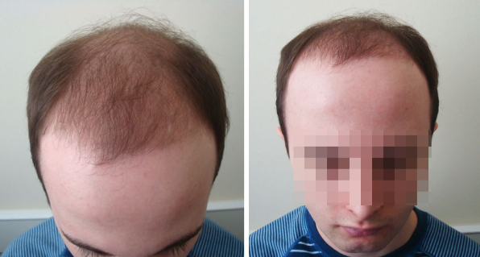
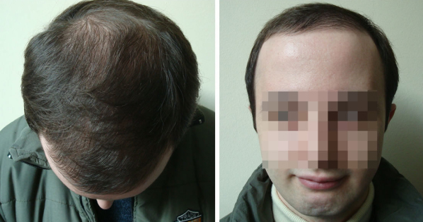
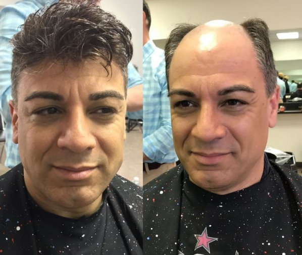
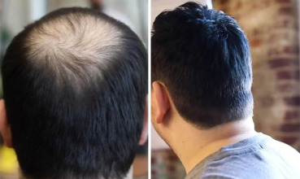

Más del 90% de los usuarios del producto declararon haber recuperado al menos el 75% del cabello en menos de 3 meses.
Los principales tricólogos del mundo afirman que Le Clere Sirene es un producto absolutamente único. Durante la primera fase de los ensayos clínicos se obtuvieron resultados sorprendentes: el 100% (¡sólo hay que pensar en esta cifra!) de los hombres detuvo la caída del cabello y más del 60% se recuperó por completo después de 4 meses. La segunda y la tercera fase de las pruebas tuvieron aún más éxito, ya que más del 73% de los participantes en el estudio pudieron revertir completamente la alopecia.
“ Le Clere Sirene es un verdadero avance en el campo de la tricología. Quizás el descubrimiento más significativo que se ha hecho en nuestro campo en los últimos 15 años. Anteriormente, el principal tratamiento para la alopecia era la finasterida, un método bastante agresivo con muchas reacciones adversas para el hígado. Sin embargo, apenas superó el 30% de efectividad. Ahora, con Le Clere Sirene, hemos aprendido a tratar la alopecia localmente, estimulando el crecimiento de los folículos pilosos inactivos y renovando las células del cuero cabelludo. Y el resultado es una eficacia de casi el 80%".
3 meses de terapia con medicamentos a base de finasterida
3 meses de terapia Le Clere Sirene
El producto es 100% natural: contiene aceites esenciales, extractos de hierbas silvestres y otros compuestos orgánicos que se encuentran en la naturaleza. A diferencia de la "química", se asimila en más de un 90%, ya que sus componentes son lo más parecido a la somatotropina, la hormona responsable del crecimiento del cabello en los hombres.
El principio de acción de este preparado es bastante sencillo: las sustancias activas penetran en las capas profundas de la piel e influyen en los bulbos pilosos latentes (¿sabe que el vello visible es poco más del 2%, el resto permanece bajo la piel en forma de bulbos latentes?) Los bulbos se activan y comienza la renovación del cabello. Los bulbos jóvenes, llenos de vitaminas y minerales, producen un cabello fuerte y sano.
Le Clere Sirene causó sensación entre los hombres colombianos. Sin embargo, la "celebración" no duró mucho. Hace unos 3 meses, el medicamento empezó a desaparecer de las farmacias (Nota del editor: lo sé de primera mano, ya que Le Clere Sirene lo compró mi padre). Al principio era posible hacer un pedido anticipado, pero luego esa opción también desapareció. Durante algún tiempo, Le Clere Sirene estuvo disponible a precios inflados en las clínicas de tricología... y la gente lo compraba de buena gana, pagando de más de 3 a 5 veces, porque no hay ningún equivalente en eficacia y seguridad a Le Clere Sirene . Más tarde, el medicamento desapareció también de los hospitales. Ahora sólo está disponible en dos instituciones médicas de élite del país, aquellas en las que se trata a funcionarios y oligarcas.
Según una fuente cercana al Ministerio de Sanidad, el motivo de la desaparición de Le Clere Sirene de las farmacias es la guerra farmacéutica. Toda la industria de la alopecia se basaba en el uso de fármacos a base de finasterida y costosos tratamientos con láser, ¡y nadie quería renunciar a este mercado!
A veces se pueden encontrar pequeñas cantidades en las tiendas online. Pero, por desgracia, no hay garantía de que vendan el producto original y no una falsificación. Aún más raro es que Le Clere Sirene aparezca en el sitio web oficial del fabricante: tienen una cuota muy pequeña para introducir el producto en el país, por lo que todos los lotes se agotan en un instante. Las personas que necesitan un tratamiento eficaz contra la alopecia controlan el sitio web oficial las 24 horas del día para tener tiempo de hacer un pedido. Aquí están sus declaraciones:
Pasé 2 meses siguiendo la pista de cuándo estaría disponible Le Clere Sirene, ¡y acabé pidiendo sólo 2 piezas! Es un escándalo que nuestro gobierno nos haga esto. Es el único producto que realmente ayuda y no puedo comprarlo.
No me gusta
Comentarios
hace un mes
Comentarios:4
Complejo para
la restauración del cabello
Le Clere
Sirene
El remedio número 1
en la lucha
contra la alopecia
Descuento
50%Diego
Lo he estado usando durante un mes. Y lo que sí puedo asegurar es que se me ha dejado de caer el pelo, ni en el baño ni en el peine (antes se me caía a mechones). No puedo decir nada más todavía.
Carlos Fuentes
He luchado contra la calvicie durante mucho tiempo. Nada funcionaba bien, ni siquiera los remedios más caros. Hasta que mi hija me trajo Le Clere Sirene de Europa. ¡¡¡¡Mira, lo usé durante medio año, y cómo se transformó mi cabeza!!!! Se lo recomiendo a todo el mundo.

 MIS NOTICIAS
MIS NOTICIAS